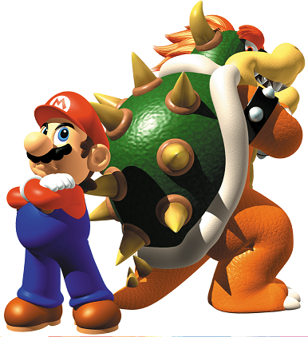

This article is a general overview of the Mario themed Nintendo Adventure Books, a more opinion based companion of my guide page. These books are a 1991-92 ‘Choose-your-own-adventure’ series based on mostly the Valiant Nintendo Comics System and the characters are from the world of Mario except for two books based on The Legend of Zelda. As you will note on my walk through page for series, the quality varies drastically at times despite there being only two writers under pen names. Here we will focus primarily on the Mario themed books I’ve read. Warning: I'm about to do some scolding below, but it's out of love, I promise! Now let’s break it down. Last update: 3/3/22
(Image) The tale as old as time, when Bowser created mutants out of his own minions and was defeated by a two headed giant Mario brother hybrid. What? Don't remember that?
Plots: Just give us an interactive adventure in Mario's world, and all of the books are at minimum mildly interesting in their premise. Bowser creates clones of everyone, the Mushroom King is transformed into a rabbit until Mario and co can win a whistle in Olympic like games, various Bowser baddies are merged into freaky monsters, Mario and Luigi are sucked into dimensional portals based on retro games, tennis shoes with a mind of their own whisk Princess Peach away for a forced ballet tour, people’s minds and bodies are swapped at random in all the Kingdom, shrink down to explore a dinosaur, etc. Really I have little issue here.
Characters: The best protagonists are usually Mario and Luigi as a team, as this paring allows for the best dialog, banter, and other action on the adventure. Mario or Luigi plus an other secondary character varies. It can work okay with Toad for instance but not so much with Yoshi who cannot speak in these books. The least exciting is usually Mario or Luigi solo. Without banter the writer has to struggle to find other ways to make the scenery or scenarios interesting. Bowser or someone related is almost always the bad guy though there are neat exceptions. Their evil plans are usually executed well enough as evidenced by the many ways the protagonist can game over and thus allow them to win. Often it's inexplicable how they come up with the wacky ideas, but that adds to the charm. Side characters are presented decently enough, often the way they might in comics of this time period. They sometimes have unique names and appearances, and for one-offs like Dr. Shrinkasaurus they seem to go all out!
Scenery: Stories take place either near the Mushroom Kingdom or Dinosaur Land. It all depends on how the writer handles it because they are free to either utilize cannon locations or make some up. At worst the book can make chapters sound like a bland showcase for either Super Mario Bros 3 or Super Mario World. In other words they stick to the dry basics and describe genericly the typical Mario geometries. At best however both environments can be used creatively to give the reader choices to make and dangers to avoid.

This is Monster Mix-Up's map. It's a ball of chaos... (Source:gamesasylum)
Structure: Now we're getting into the thick of things. This is my primary factor for overall enjoyment. There are two plot designs they seem to use the most. The first is where the protagonist has a vast area to explore somewhat freely. While cool, navigation can be tricky as you fall victim to constant loopbacks (see guide page for terms) and you might not know exactly what you need to explore or do before you reach the end, which will be much more linear. The second method is to have a more structured journey that has branches at points but are more or less detours to hit the same beats. This might seem boring, but isn't if the plot is strong. Note that here that they seem to allow more choices and be less linear towards the end.
I can't be too harsh, because these books by design have one 'Good' and several 'Bad' endings with no inbetweens. Still however I expect some sense of progression and to encounter different 'events' (or if the bar is low, pages) and still reach the end. Understandably there will be paths that lead no where good, but those should be interesting to explore as well. With this in mind, I have a better opinion overall of books utilizing the second design, if only due to the unintended consequence that the writing suffers the more open they try to get. Their straight shot ending sequences are also bland or pull off tricks I don't care for. (Notable offenders: Koopa Kapers, Dinosaur Dilemma) Yet, those more structured books have an ending that I can read multiple times and do slightly different things, which is better design to me.
Let's briefly single some out: Book 3: Monster Mix-Up cemented the first design type to me when younger, difficult to navigate due to the scenery being generic and identical and the structure having a bad habit of needlessly looping you. (From my modern perspective it's one of the more forgiving of this type. While it's annoying that innocuous choices such as listening to Toad or not, can kill you while you're lost, that book has only one item check that allows second chances, a very generous thing compared to other books) Dinosaur Dilemma is like that but a little worse, and a large part of the reason why I wanted to create a guide series. A favorite, Book 2: Leaping Lizards is type two. It guides you on a set journey with a little bit of optional scenery on alternate reads, but it has an ending with many different events to discover. Book 6: Doors to Doom is I feel a hybrid. Like type one you will need to loop and it has a linear end, but like type two the journey is somewhat structured to encounter specific events.
Among people that care about this thing, the elephant in the room is if it's appropriate or not to revisit pages and recount their points awarded. Personally I do unless the book says otherwise, because it should be written in a way so that this doesn't cause issues. Does this make the score infinite then? Unfortunately yes. Pages that give awards “should” not be on any loopback, but the reality is that the writers don’t think that far ahead. (See Score section)
What about the finale/ ending sequences? As touched on before, some will have a stringent single winning path (Book 3: Monster Mix-up, Book 4: Koopa Kapers, Book 7: Dinosaur Dilemma) or instead give you some choices to explore down to the end or very close. (Book 2: Leaping Lizards, Book 5: Pipe Down!, Book 12: Brain Drain). I think the best is when the book is designed thoughtfully enough to allow the reader some room for error during the finale. You may not do perfect on earlier sections but can scrape away a victory at the expense of not obtaining the high score (see Score section). This is rare in this series but 'Leaping Lizards' and 'Pipe Down!' for instance pull this off.

Seems simple but now imagine this without a word bank (Source:Mariowiki)
Puzzles: On my walk through page I compartmentalize the puzzles present in this series into seven main categories. Ideally the books should offer some variety with a mild to decent yet fair challenge. Problem is, that's a tall order! I find that the puzzle's relation to Mario game mechanics and/or the book's theme don't correlate to quality, so if you see that, don't assume too quickly. It IS cute when they do tie it all in, but you will find some puzzles puzzling, and not in the way they intend. Frustration can originate from outright errors in the instructions or images provided, or unclear directions. Even if it is easily solvable, there may be another large problem. Generally puzzles are supposed to help you in some way, guiding you to the better or only safe path and/or giving you points and/or items, but other times they are arbitrarily there. I call this 'Just a Hint' type puzzles.
What if it's not 'just a hint'? Unfortunately even in the otherwise better written stories you might find puzzles definitively give you options but fail to tell you what is the correct one. (To elaborate, none of the choices will lead to death, but the puzzle will not inform you that one particular path is the way to obtain an item that's needed or which path awards more points. If the writer wants you to guess on a split, which is totally acceptable, they should present the options without a puzzle. Instead inserting a puzzle to tell you is deceiving, because you are generally expecting a puzzle to steer you right every time.)
Some problematic puzzle may be tied to items you need, so watch out. (Flown the Koopa is a blatant example. To a lesser extent, the best item you want for a particular situation in Pipe Down! is determined by a guessing puzzle, but that better designed book has at least a fail safe for that.) Similarly some puzzles have variable scoring based on how well you do. This can be amusing when a really high or low score is presented as a page split option that is actually a red herring, leading to a ‘You can’t get this score!’ page. The assumption here is that they think you cheated or can’t count. On the downside a useful path is sometimes 'paywalled' by a score you need to obtain that's difficult to get. It can be ambiguous if that's a deliberate choice for difficulty or an error in the threshold. Because of that I feel those puzzles should only be for score and not for important paths, as some of these puzzle are literal guessing games.

Be careful how you solve 'maze' puzzles like this, as it may affect if the high score or the path you need is obtainable or not. (Source:Mariowiki)
Items: Mario uses power ups so of course they're here too, required for 'item checks'. No book requires all items to be used and no book allows you to skip them all either. In between those extremes there is still quite a bit of difference in the way various books handle them. Some are very item focused, requiring multiple for completion. Expect the items to be found near the start or middle and the checks towards the end. Other's have one undodgeable check but the rest of the items are for situations you may or may not encounter.
Going back to the puzzle rant, I expect getting puzzles correct to guide you to them, but anything goes sometimes. Maybe instead it's the second issue where puzzles are taking you somewhere but you can't realize it's towards something important until you've encountered it at least once, as it's buried in the book. An alarming amount of books, even otherwise good ones, don't really warn about this thing so be careful. While I appreciate that items encourage exploration and emulate a game like experience, they can at least throw hints out there, or at the very least offer opportunities to backtrack without a total reset.
Some books have hazards which will remove or ‘buffet’ the player of their item or points. For some reason it's inconsistent which books feature this or not, which is a mild missed opportunity. Sometimes this hazard is a less severe way of punishment and it's nice to have something other than automatic game overs for mistakes. I digress. You may or may not depending on book be able to recollect your lost stuff. Another quirk are ‘Items of Doom’ that do what you think they'll do by using it, or egregiously by simply having it in your inventory at the wrong time. They are intentionally out of left field, as they do not present as negative. There are no 'poison mushrooms' for instance, rather you will never know the item is to be avoided until it kills you the first time.
To make matter's worse, or cruelly funny depending on how you want to look at it, some books like to trick you by subtly implying that's an item you want to get. Monster Mix up 'kindly' gives you a path to collect it's item of doom if you reach an item check without it. (To give it credit in return however, it does not force you to use the item if you reach the check). Most of the time however it's less intentionally malicious, instead a random item you can nab during a puzzle. Like I said before, you only have to fall for this once to know forever, but the random thing I feel is bad design. (Otherwise great book Leaping Lizards is an offender, though you can simply avoid the item check. Also Flown the Koopa has a doom item nestled alarmingly in the puzzle with a required item. But here the issue is more the unclear instructions.)

A typical score card to the right, in this instance one that requires the reader to convert their coins to points. Take note of their little 'hints'. For this particular book, one of these is out right bad advice and the other frivolous at best..
Scoring and Hints: Woo boy... Get ready. Books award points or coins that later convert to points by base 10s, and you are ranked on how well you do on the back page. For MULTIPLE reasons, I'm convinced they tested nothing at all. In some stories you earn the maximum score automatically by simply reaching the end. In others things get dicey, as it feels nigh impossible to add up enough points no matter what- or at least not 'naturally'. This gives credence to the ideal that 'yes they want you to reread pages and farm points', but you can never be sure, so I'm leaning with incompetence. It might be an interesting self imposed challenge to see what's the lowest you can complete the adventure with, because correct choices that don't kill you tend to give points as well. I might check this out. Anyway, don't take the score too seriously. Even the best books falter in this spot.
Now the so-called hint system: Depending on book this is something to heed if you are stuck or plainly ignore because it's useless or wrong. Yes, some books give bad advise, prodding you to take paths that are potentially dangerous or time wasters. Other just tell you that you need an item or that you need to encounter an event, the latter may or may not be something avoidable anyway. Others steer you towards higher score paths, so that's fair enough. How many you get depends on book and no, there's no correlation with book difficulty and amount of or quality of hints. (Leaping Lizards is a good book as I've said a million times now, but the hints? Rubbish. I've also beat up on Dinosaur Dilemma a ton too, but resoundingly it's hints are helpful. Koopa Kapers however forgoes assisting you with it's tricky navigation, instead only hinting about point opportunities or stating the obvious. It's a mixed bag!)

The quality of some of the 'original' artwork you can find in the series. (Source:Mariowiki)
Illustrations: For once I can't ramble much. Expect stock art of Mario and crew, usually taken from official game artwork, or custom edits and completely original characters. The settlings are always orginally drawn so look forward to that. This crosses over into puzzles, as there is where you find most pictures. Sometimes something is presented ambiguously but I usually blame the puzzle's written portion more for that. Aside from the fact that the incorrect character may be shown compared to what the page's text describes, I rate this satisfactory overall. Some are more basic than others but they have personality.
Concluding thoughts: I.. still... love this collection, because aside from most of the books being genuinely engaging experiences, it's a unique piece of history and there is nothing like it in the Mario series. I am sure some seasoned choose-your-own-adventure fans might scoff at a few things here or find it a little to 'light' or basic but any Mario fan who is even vaguely interested should check out as many as you can. Each adventure, good or bad, offers something worth checking out. For more of my thoughts on them individually, and to understand a little more how I break down the puzzles and structure, please see my guide page HERE. Thanks for reading!

This isn't 1991, so you have a lot of online options! (Source:Mariowiki)
-Demian's Gamebook page here and here: These pages cover briefly all of the books with Demian's and a few other's opinions on them and some of their scores. Feel free to compare to mine though I suspect our methodology differ just a bit. The second page contains scans of some of the score cards and some visual differences between the American, Pringles, and British versions of the books.
-Mariowiki Nintendo Adventure Books entries. There are unique pages for all books as well as entries on some key items.
-Spectrum of Madness blog. More opinions on the books, going just a bit more in depth than the others and rating them somewhat.
-Gamesasylum coverage and map. Brief coverage on the series but also the home of the only map of these books aside from my own!
-VoVatia 'Nintendo in Book Form' coverage: More coverage briefly on each book.
-A TvTropes page that will ruin your life! Has spoilers, I mean.. if you care.
-Archive.org scans of Double Trouble. Some scans are a little grainy but it can get you through it.
-Imgur album photo scans of Flown the Koopa. The resource I used to create my guide.